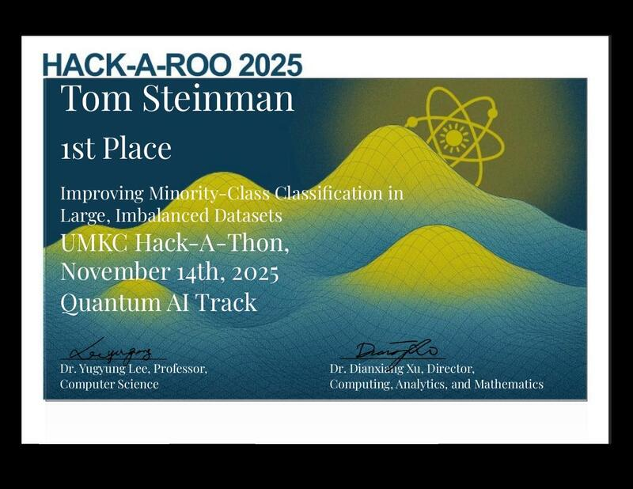
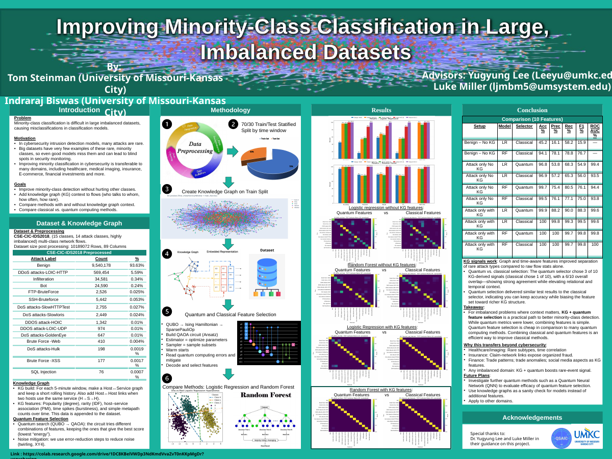
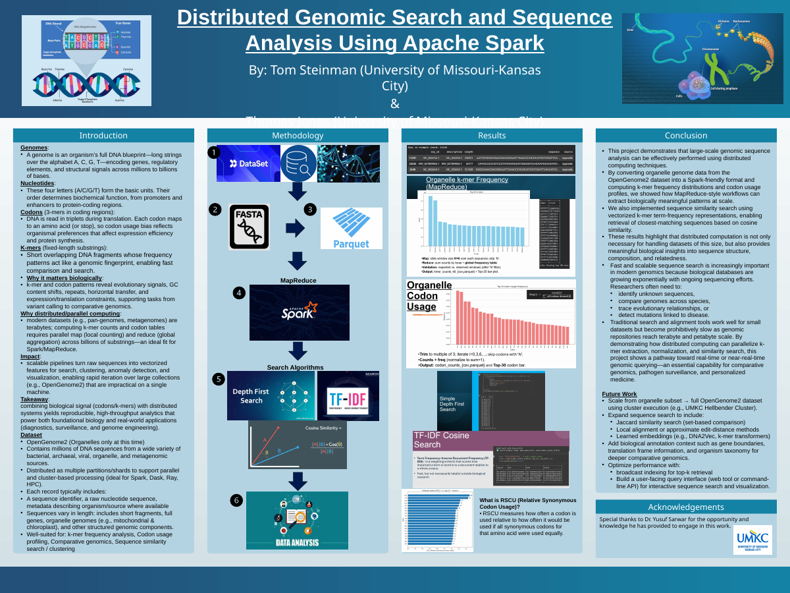

Improving Minority-Class Classification in Large, Imbalanced Datasets
Research focused on improving rare-class prediction in large, imbalanced datasets using network intrusion detection as a case study.
View PosterSelected research and presentation work in AI, cybersecurity, quantum-inspired optimization, big data, and genomic sequence analysis.
Research focused on improving rare-class prediction in large, imbalanced datasets using network intrusion detection as a case study.
View PosterBig-data genomics project focused on scalable sequence processing, k-mer and codon analysis, and distributed-friendly genomic representations.
View Poster
Recognized for my poster: Improving Minority-Class Classification in Large, Imbalanced Datasets.
View Certificate
Knowledge-graph signals + quantum-inspired feature selection to strengthen minority-class performance in intrusion detection.
View Poster (PDF)
Distributed k-mer/codon analysis and scalable similarity search over the OpenGenome2 dataset.
View Poster (PPTX)These presentation videos were created to meet a required time limit of under 2 minutes each.
Hackathon presentation summarizing the minority-class classification project using AI, cybersecurity, and quantum methods.
Watch on YouTubeHackathon presentation summarizing the OpenGenome2 distributed genomic search and sequence analysis project.
Watch on YouTube